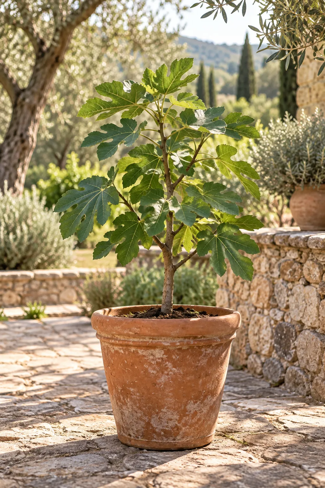
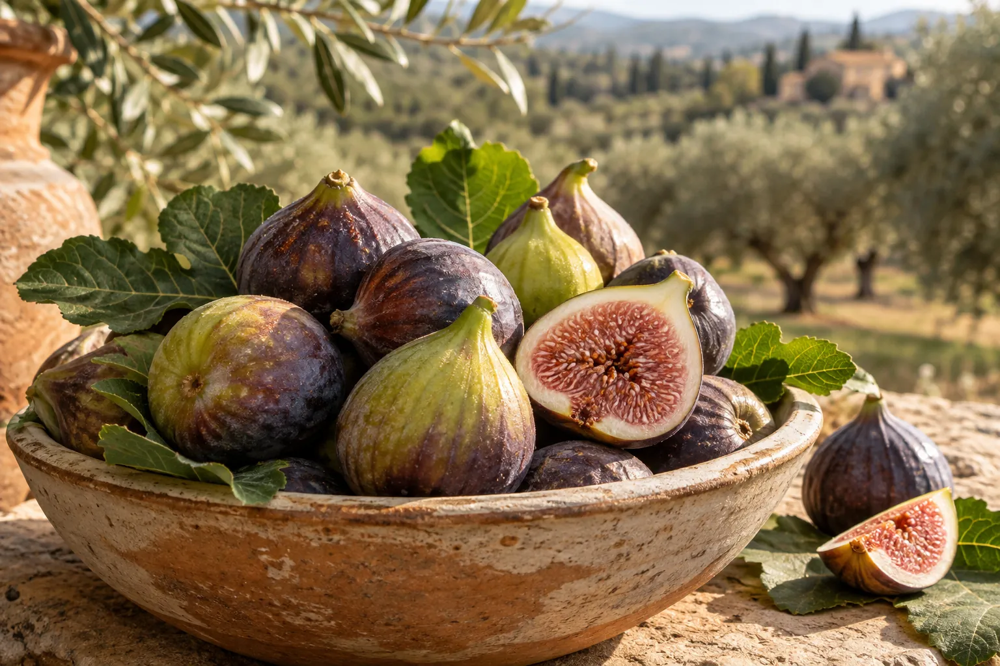
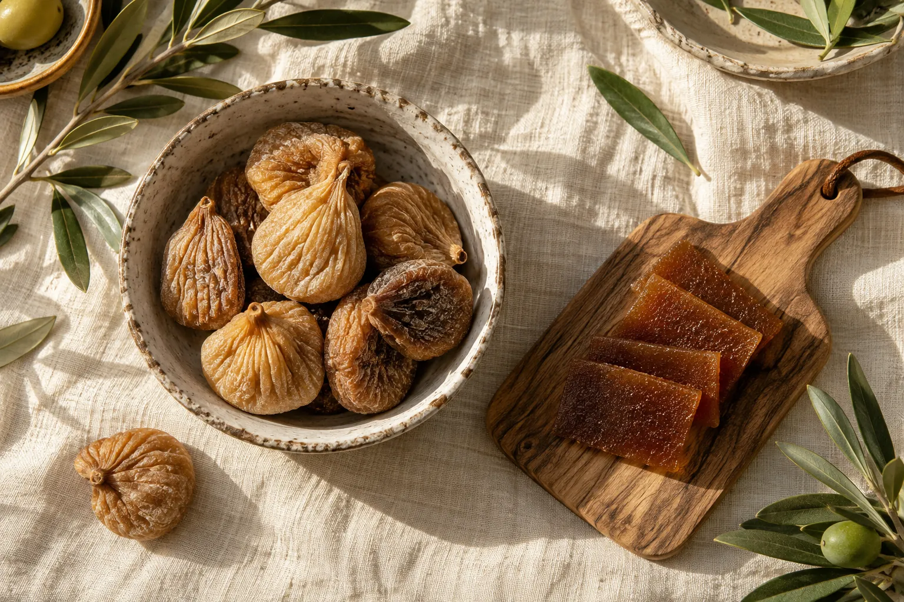

طلبك في رسالة واحدة
اجمع ما تحب في قائمة، ونحوّلها لرسالة واتساب جاهزة. بلا حساب ولا نماذج طويلة.
مزرعة ومشاتل النادرية · أحد رفيدة، عسير
تين وقطين وعجينة تين وشتلات من مزرعتنا في الفرعين بأحد رفيدة. اختر ما تحب، ونرتّب معك الطلب مباشرة عبر واتساب.
تتواصل مباشرة مع المزرعة · يرعاها مؤسسها أبو عبدالكريم



لماذا النادرية
تتحدث مع أهل المزرعة مباشرة. هم من يقطفون، وهم من يردّون على رسالتك.
اجمع ما تحب في قائمة، ونحوّلها لرسالة واتساب جاهزة. بلا حساب ولا نماذج طويلة.
التوفر والوزن والسعر وطريقة الاستلام نراجعها معك أولًا. لا يوجد دفع في الموقع.
أخبرنا بمدينتك، وهل ستزرع في الأرض أو في أصيص، ونساعدك تختار الشتلة المناسبة.
نقطف ونفرز يدويًا في المزرعة، ثم ننسّق الاستلام أو التوصيل حسب منطقتك.
لا نبيعك تينًا من رفٍّ مجهول. نقطفه من غصنٍ نعرفه، لمن يعرف الفرق من أول قضمة.
خيرات النادرية
اختر ما تحب وأضفه إلى قائمتك. نؤكد الأسعار والأحجام والتوفر معك قبل الطلب.
من الغصن في وقته. ثمار تُقطف وتُفرز يدويًا بعناية.
حلاوة التين في صورتها الأصيلة. رفيق القهوة ولحظات الضيافة.
نكهة غنية تمنح فطورك ووصفاتك وحلوياتك لمسة مختلفة.
ابدأ حكايتك مع الزراعة. نساعدك تختار الشتلة الأنسب لأرضك.
خطوة صغيرة نحو شجرتك القادمة. تُنسَّق حسب موسم التقليم.
اختر من خيراتنا، واسأل عن تغليف يليق بمن تحب.
كل موسم له خيراته. الصور تعبيرية وليست تصويرًا للمنتجات الفعلية.
حكايتنا
في الفرعين، بين مرتفعات أحد رفيدة، تنمو حكايتنا مع شجرة التين. نعتني بها من أول ورقة إلى آخر ثمرة، ونؤمن أن الجودة تبدأ من صبر المزارع وحبّه لأرضه.
النادرية مزرعة ومشتل، ومساحة نشاركك فيها ما نحب: ثمارًا طيبة، وغرسًا ينمو معك، وتفاصيل تحمل روح الجنوب.
المشتل
أول شجرة في حديقتك، أو إضافة جديدة لمزرعتك؟ شتلات وعُقل النادرية بداية جميلة، ونساعدك تختار حسب منطقتك ومكان الزراعة.
كيف تطلب
تصفّح الثمار والمونة والشتلات، واجمع اختياراتك في قائمة واحدة.
تتحول قائمتك إلى رسالة جاهزة. راجعها وأرسلها متى ما كنت جاهزًا.
نتفق معك على الكميات والسعر والتوصيل، ثم نجهّز طلبك بعناية.
أضف المنتجات التي تعجبك إلى قائمة طلبك، ثم راجع الكميات وأكمل عبر واتساب. نؤكد معك التوفر والسعر والوزن أو حجم الشتلة وطريقة الاستلام قبل تأكيد الطلب.
لا. الموقع لا يأخذ أي دفعة ولا يتطلب تسجيلًا. يؤكد فريق المزرعة معك السعر وتفاصيل الطلب مباشرة عبر واتساب.
التين الطازج منتج موسمي، ويتغير توفره بحسب القطف والنضج. راسلنا لمعرفة المتاح حاليًا، ويمكنك أيضًا الاستفسار عن القطين وعجينة التين.
ننسق التوصيل والشحن حسب موقعك ونوع المنتج والكمية. اذكر مدينتك في قائمة الطلب لنوضح لك الخيارات والتكلفة قبل التأكيد.
يا مرحبًا بك. الزيارة بالتنسيق المسبق؛ تواصل معنا لنتفق على الموعد ونشاركك الموقع الدقيق للمزرعة.
أخبرنا بمنطقتك ومكان الزراعة، سواء في الأرض أو في أصيص. نساعدك في اختيار الشتلة أو العُقلة المناسبة ونوضح لك تفاصيل العناية عند الطلب.
نعم، يمكنك التواصل لتنسيق كميات المحلات والمناسبات والهدايا. أرسل الكمية التقريبية والتاريخ المطلوب، ونؤكد لك ما يمكن توفيره.
الصور الحالية تعبيرية، وليست تصويرًا لمنتجات المزرعة أو عبواتها. اسألنا عبر واتساب إن رغبت بصور لما هو متاح اليوم.
يا مرحبًا، عدد ما أثمر الغصن
بدون تسجيل وبدون دفع في الموقع. نؤكد التوفر والسعر والتوصيل معك قبل أي طلب.